Solving Systems with Gaussian Elimination
Learning Objectives
- Use row operations on a matrix (IA 4.5.2)
- Solve systems of equations using matrices (IA 4.5.3)
Objective 1: Use row operations on a matrix (IA 4.5.2)
In the last section, we learned how to write the augmented matrix for a system of equations.
Once a system of equations is in its augmented matrix form, we will solve by elimination by performing operations on the rows that will lead us to the solution. Our goal will be to get 1 on the diagonal of the matrix and all entries below the diagonal must be zeros.
Row Operations
In a matrix, the following operations can be performed on any row and the resulting matrix will be equivalent to the original matrix.
- Interchange any two rows.
- Multiply a row by any real number except 0.
- Add a nonzero multiple of one row to another row.
These actions are called row operations and will help us use the matrix to solve a system of equations.
Use the indicated row operations on the augmented matrix:
- ⓐ Interchange rows 2 and 3.
- ⓑ Multiply row 2 by 5.
- ⓒ Multiply row 3 by −2 and add to row 1.
Solution
| ⓐ Interchange rows 2 and 3. |
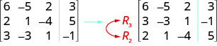 |
| ⓑ Multiply row 2 by 5. |
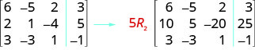 |
| ⓒ Multiply row 3 by −2 and add to row 1. |

|
Use the needed row operation that will get the first entry in row 2 to be zero in the augmented matrix:
Solution
To make the 4 a 0, we could multiply row 1 by and then add it to row 2.
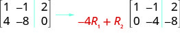
Practice Makes Perfect
Use the needed row operation that will get the first entry in row 2 to be zero in the augmented matrix
Objective 2: Solve systems of equations using matrices (IA 4.5.3)
To solve a system of equations using matrices, we transform the augmented matrix into a matrix in row-echelon form using row operations. For a consistent and independent system of equations, the augmented matrix is in row-echelon form when to the left of the vertical line, each entry on the diagonal is a 1 and all entries below the diagonal are zeros.

Once we get the augmented matrix into row-echelon form, we can write the equivalent system of equations and solve for at least one variable. We then substitute this value in another equation to continue to solve for the other variables.
Solve the system of equations using matrices
Solution
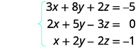 |
|
| Write the augmented matrix for the system of equations. | 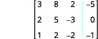 |
| Interchange row 1 and row 3 to get a 1 in the first row and first column. | 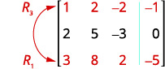 |
| Using row operations, get zeros in column 1 below the 1 | 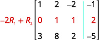 |
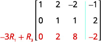 |
|
| The entry in row 2, column 2 is now 1. | |
| Continue the process until the matrix is in row-echelon form. |
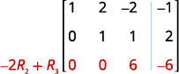 |
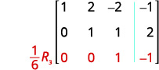 |
|
| The matrix is now in row-echelon form. | 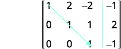 |
| Write the corresponding system of equations. | 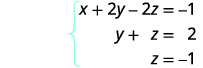 |
| Use substitution to find the remaining variables. | 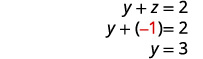 |
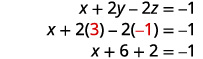 |
|
| Write the solution as an ordered pair or triple. | |
| Check that the solution makes the original equations true. |
Practice Makes Perfect
Solve the system of equations using matrices
Carl Friedrich Gauss lived during the late 18th century and early 19th century, but he is still considered one of the most prolific mathematicians in history. His contributions to the science of mathematics and physics span fields such as algebra, number theory, analysis, differential geometry, astronomy, and optics, among others. His discoveries regarding matrix theory changed the way mathematicians have worked for the last two centuries.
We first encountered Gaussian elimination in Systems of Linear Equations: Two Variables. In this section, we will revisit this technique for solving systems, this time using matrices.
Writing the Augmented Matrix of a System of Equations
A matrix can serve as a device for representing and solving a system of equations. To express a system in matrix form, we extract the coefficients of the variables and the constants, and these become the entries of the matrix. We use a vertical line to separate the coefficient entries from the constants, essentially replacing the equal signs. When a system is written in this form, we call it an augmented matrix.
For example, consider the following system of equations.
We can write this system as an augmented matrix:
We can also write a matrix containing just the coefficients. This is called the coefficient matrix.
A three-by-three system of equations such as
has a coefficient matrix
and is represented by the augmented matrix
Notice that the matrix is written so that the variables line up in their own columns: x-terms go in the first column, y-terms in the second column, and z-terms in the third column. It is very important that each equation is written in standard form so that the variables line up. When there is a missing variable term in an equation, the coefficient is 0.
Writing the Augmented Matrix for a System of Equations
Write the augmented matrix for the given system of equations.
Solution
The augmented matrix displays the coefficients of the variables, and an additional column for the constants.
Writing a System of Equations from an Augmented Matrix
We can use augmented matrices to help us solve systems of equations because they simplify operations when the systems are not encumbered by the variables. However, it is important to understand how to move back and forth between formats in order to make finding solutions smoother and more intuitive. Here, we will use the information in an augmented matrix to write the system of equations in standard form.
Writing a System of Equations from an Augmented Matrix Form
Find the system of equations from the augmented matrix.
Solution
When the columns represent the variables and
Performing Row Operations on a Matrix
Now that we can write systems of equations in augmented matrix form, we will examine the various row operations that can be performed on a matrix, such as addition, multiplication by a constant, and interchanging rows.
Performing row operations on a matrix is the method we use for solving a system of equations. In order to solve the system of equations, we want to convert the matrix to row-echelon form, in which there are ones down the main diagonal from the upper left corner to the lower right corner, and zeros in every position below the main diagonal as shown.
We use row operations corresponding to equation operations to obtain a new matrix that is row-equivalent in a simpler form. Here are the guidelines to obtaining row-echelon form.
- In any nonzero row, the first nonzero number is a 1. It is called a leading 1.
- Any all-zero rows are placed at the bottom on the matrix.
- Any leading 1 is below and to the right of a previous leading 1.
- Any column containing a leading 1 has zeros in all other positions in the column.
To solve a system of equations we can perform the following row operations to convert the coefficient matrix to row-echelon form and do back-substitution to find the solution.
- Interchange rows. (Notation: )
- Multiply a row by a constant. (Notation: )
- Add the product of a row multiplied by a constant to another row. (Notation:
Each of the row operations corresponds to the operations we have already learned to solve systems of equations in three variables. With these operations, there are some key moves that will quickly achieve the goal of writing a matrix in row-echelon form. To obtain a matrix in row-echelon form for finding solutions, we use Gaussian elimination, a method that uses row operations to obtain a 1 as the first entry so that row 1 can be used to convert the remaining rows.
Solving a System by Gaussian Elimination
Solve the given system by Gaussian elimination.
Solution
First, we write this as an augmented matrix.
We want a 1 in row 1, column 1. This can be accomplished by interchanging row 1 and row 2.
We now have a 1 as the first entry in row 1, column 1. Now let’s obtain a 0 in row 2, column 1. This can be accomplished by multiplying row 1 by and then adding the result to row 2.
We only have one more step, to multiply row 2 by
Use back-substitution. The second row of the matrix represents Back-substitute into the first equation.
The solution is the point
Using Gaussian Elimination to Solve a System of Equations
Use Gaussian elimination to solve the given system of equations.
Solution
Write the system as an augmented matrix.
Obtain a 1 in row 1, column 1. This can be accomplished by multiplying the first row by
Next, we want a 0 in row 2, column 1. Multiply row 1 by and add row 1 to row 2.
The second row represents the equation Therefore, the system is inconsistent and has no solution.
Solving a Dependent System
Solve the system of equations.
Solution
Perform row operations on the augmented matrix to try and achieve row-echelon form.
The matrix ends up with all zeros in the last row: Thus, there are an infinite number of solutions and the system is classified as dependent. To find the generic solution, return to one of the original equations and solve for
So the solution to this system is
Performing Row Operations on a 3×3 Augmented Matrix to Obtain Row-Echelon Form
Perform row operations on the given matrix to obtain row-echelon form.
Solution
The first row already has a 1 in row 1, column 1. The next step is to multiply row 1 by and add it to row 2. Then replace row 2 with the result.
Next, obtain a zero in row 3, column 1.
Next, obtain a zero in row 3, column 2.
The last step is to obtain a 1 in row 3, column 3.
Solving a System of Linear Equations Using Matrices
We have seen how to write a system of equations with an augmented matrix, and then how to use row operations and back-substitution to obtain row-echelon form. Now, we will take row-echelon form a step farther to solve a 3 by 3 system of linear equations. The general idea is to eliminate all but one variable using row operations and then back-substitute to solve for the other variables.
Solving a System of Linear Equations Using Matrices
Solve the system of linear equations using matrices.
Solution
First, we write the augmented matrix.
Next, we perform row operations to obtain row-echelon form.
The easiest way to obtain a 1 in row 2, column 2 is to interchange and
Then
The last matrix represents the equivalent system.
Using back-substitution, we obtain the solution as
Solving a Dependent System of Linear Equations Using Matrices
Solve the following system of linear equations using matrices.
Solution
Write the augmented matrix.
First, multiply row 1 by to get a 1 in row 1, column 1. Then, perform row operations to obtain row-echelon form.
The last matrix represents the following system.
We see by the identity that this is a dependent system with an infinite number of solutions. We then find the generic solution. By solving the second equation for and substituting it into the first equation we can solve for in terms of
Now we substitute the expression for into the second equation to solve for in terms of
The generic solution is
Solving Systems of Equations with Matrices Using a Calculator
Solve the system of equations.
Solution
Write the augmented matrix for the system of equations.
On the matrix page of the calculator, enter the augmented matrix above as the matrix variable
Use the ref( function in the calculator, calling up the matrix variable
Evaluate.
Using back-substitution, the solution is
Applying 2 × 2 Matrices to Finance
Carolyn invests a total of $12,000 in two municipal bonds, one paying 10.5% interest and the other paying 12% interest. The annual interest earned on the two investments last year was $1,335. How much was invested at each rate?
Solution
We have a system of two equations in two variables. Let the amount invested at 10.5% interest, and the amount invested at 12% interest.
As a matrix, we have
Multiply row 1 by and add the result to row 2.
Then,
So
Thus, $5,000 was invested at 12% interest and $7,000 at 10.5% interest.
Applying 3 × 3 Matrices to Finance
Ava invests a total of $10,000 in three accounts, one paying 5% interest, another paying 8% interest, and the third paying 9% interest. The annual interest earned on the three investments last year was $770. The amount invested at 9% was twice the amount invested at 5%. How much was invested at each rate?
Solution
We have a system of three equations in three variables. Let be the amount invested at 5% interest, let be the amount invested at 8% interest, and let be the amount invested at 9% interest. Thus,
As a matrix, we have
Now, we perform Gaussian elimination to achieve row-echelon form.
The third row tells us thus
The second row tells us Substituting we get
The first row tells us Substituting and we get
The answer is $3,000 invested at 5% interest, $1,000 invested at 8%, and $6,000 invested at 9% interest.
Key Concepts
- An augmented matrix is one that contains the coefficients and constants of a system of equations. See Example 4.
- A matrix augmented with the constant column can be represented as the original system of equations. See Example 5.
- Row operations include multiplying a row by a constant, adding one row to another row, and interchanging rows.
- We can use Gaussian elimination to solve a system of equations. See Example 6, Example 7, and Example 8.
- Row operations are performed on matrices to obtain row-echelon form. See Example 9.
- To solve a system of equations, write it in augmented matrix form. Perform row operations to obtain row-echelon form. Back-substitute to find the solutions. See Example 10 and Example 11.
- A calculator can be used to solve systems of equations using matrices. See Example 12.
- Many real-world problems can be solved using augmented matrices. See Example 13 and Example 14.
Section Exercises
Verbal
Can any system of linear equations be written as an augmented matrix? Explain why or why not. Explain how to write that augmented matrix.
Solution
Yes. For each row, the coefficients of the variables are written across the corresponding row, and a vertical bar is placed; then the constants are placed to the right of the vertical bar.
Can any matrix be written as a system of linear equations? Explain why or why not. Explain how to write that system of equations.
Is there only one correct method of using row operations on a matrix? Try to explain two different row operations possible to solve the augmented matrix
Solution
No, there are numerous correct methods of using row operations on a matrix. Two possible ways are the following: (1) Interchange rows 1 and 2. Then (2) Then divide row 1 by 9.
Can a matrix whose entry is 0 on the diagonal be solved? Explain why or why not. What would you do to remedy the situation?
Can a matrix that has 0 entries for an entire row have one solution? Explain why or why not.
Solution
No. A matrix with 0 entries for an entire row would have either zero or infinitely many solutions.
Algebraic
For the following exercises, write the augmented matrix for the linear system.
Solution
Solution
For the following exercises, write the linear system from the augmented matrix.
Solution
Solution
Solution
For the following exercises, solve the system by Gaussian elimination.
Solution
No solutions
Solution
Solution
Solution
Solution
Solution
Solution
Solution
Solution
Solution
Solution
Solution
Solution
Solution
Solution
Extensions
For the following exercises, use Gaussian elimination to solve the system.
Solution
Solution
Solution
No solutions exist.
Real-World Applications
For the following exercises, set up the augmented matrix that describes the situation, and solve for the desired solution.
Every day, Angeni's cupcake store sells 5,000 cupcakes in chocolate and vanilla flavors. If the chocolate flavor is 3 times as popular as the vanilla flavor, how many of each cupcake does the store sell per day?
At Bakari's competing cupcake store, $4,520 worth of cupcakes are sold daily. The chocolate cupcakes cost $2.25 and the red velvet cupcakes cost $1.75. If the total number of cupcakes sold per day is 2,200, how many of each flavor are sold each day?
Solution
860 red velvet, 1,340 chocolate
You invested $10,000 into two accounts: one that has simple 3% interest, the other with 2.5% interest. If your total interest payment after one year was $283.50, how much was in each account after the year passed?
You invested $2,300 into account 1, and $2,700 into account 2. If the total amount of interest after one year is $254, and account 2 has 1.5 times the interest rate of account 1, what are the interest rates? Assume simple interest rates.
Solution
4% for account 1, 6% for account 2
Bikes’R’Us manufactures bikes, which sell for $250. It costs the manufacturer $180 per bike, plus a startup fee of $3,500. After how many bikes sold will the manufacturer break even?
A major appliance store has agreed to order vacuums from a startup founded by college engineering students. The store would be able to purchase the vacuums for $86 each, with a delivery fee of $9,200, regardless of how many vacuums are sold. If the store needs to start seeing a profit after 230 units are sold, how much should they charge for the vacuums?
Solution
$126
The three most popular ice cream flavors are chocolate, strawberry, and vanilla, comprising 83% of the flavors sold at an ice cream shop. If vanilla sells 1% more than twice strawberry, and chocolate sells 11% more than vanilla, how much of the total ice cream consumption are the vanilla, chocolate, and strawberry flavors?
At an ice cream shop, three flavors are increasing in demand. Last year, banana, pumpkin, and rocky road ice cream made up 12% of total ice cream sales. This year, the same three ice creams made up 16.9% of ice cream sales. The rocky road sales doubled, the banana sales increased by 50%, and the pumpkin sales increased by 20%. If the rocky road ice cream had one less percent of sales than the banana ice cream, find out the percentage of ice cream sales each individual ice cream made last year.
Solution
Banana was 3%, pumpkin was 7%, and rocky road was 2%
A bag of mixed nuts contains cashews, pistachios, and almonds. There are 1,000 total nuts in the bag, and there are 100 less almonds than pistachios. The cashews weigh 3 g, pistachios weigh 4 g, and almonds weigh 5 g. If the bag weighs 3.7 kg, find out how many of each type of nut is in the bag.
A bag of mixed nuts contains cashews, pistachios, and almonds. Originally there were 900 nuts in the bag. 30% of the almonds, 20% of the cashews, and 10% of the pistachios were eaten, and now there are 770 nuts left in the bag. Originally, there were 100 more cashews than almonds. Figure out how many of each type of nut was in the bag to begin with.
Solution
100 almonds, 200 cashews, 600 pistachios